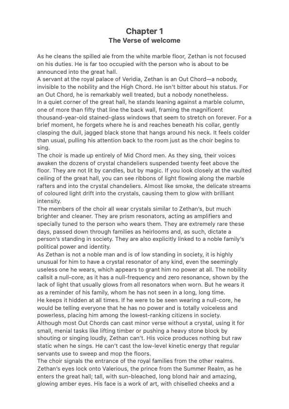

Chapter One
Your first glimpse into the Four Realms begins here.

Thank you for being part of the journey into the Four Realms.
The Four Realms — Book One
← Back to the Readers RoomYour first glimpse into the Four Realms begins here.

Thank you for being part of the journey into the Four Realms.